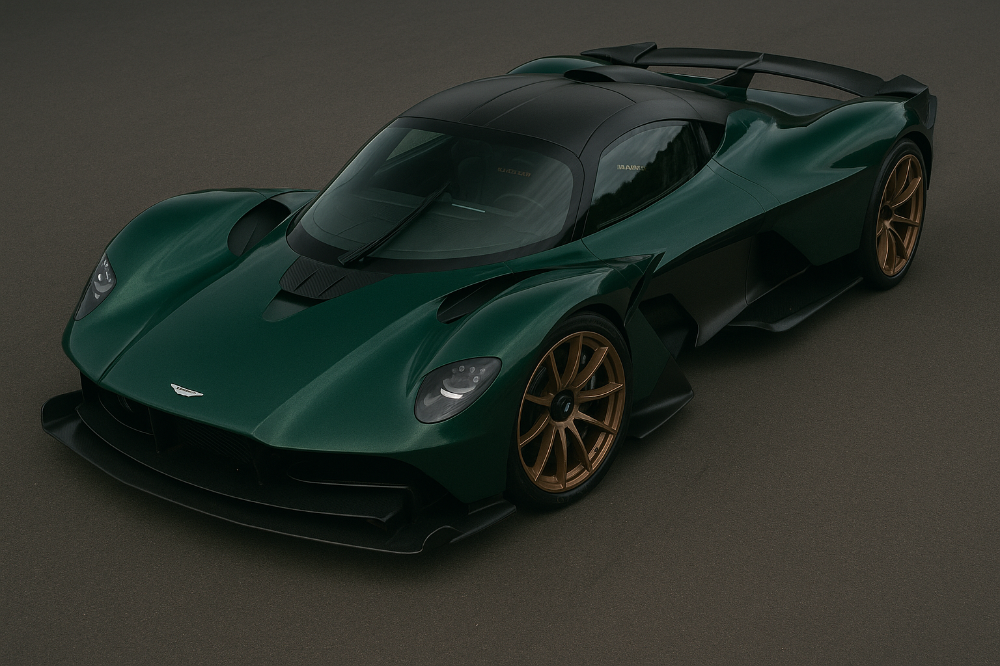

Aston Martin Valkyrie
Datos interesantes
El Valkyrie fue creado con Red Bull Racing para llevar la experiencia F1 a la calle. Usa un motor V12 híbrido con más de 1,100 hp.
Características
- Motor V12 híbrido atmosférico
- 1,160 hp
- Diseño de F1 homologado
- Peso ultraligero
Logros
- Diseño con Red Bull Advanced Tech
- Solo 150 unidades
- Interior tipo monoplaza
- Legal en calle y pista